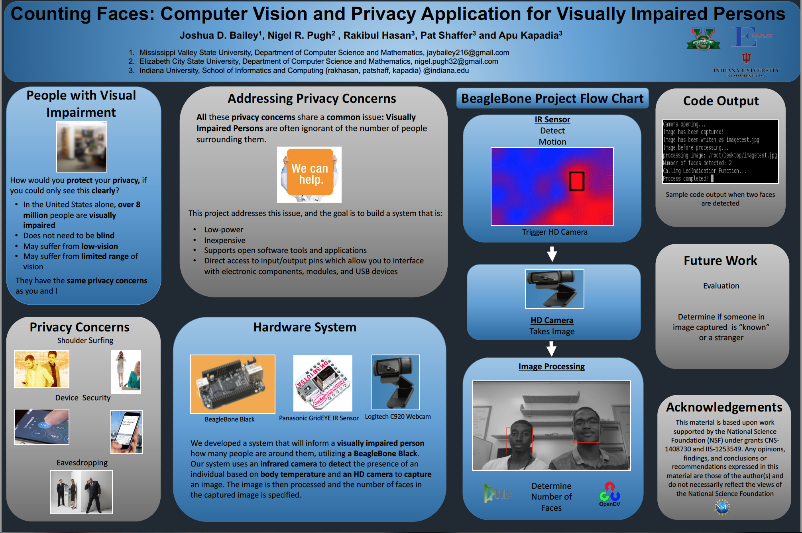
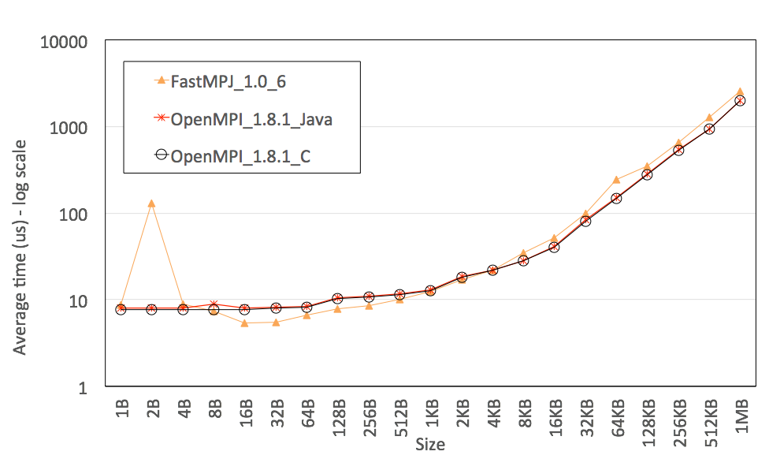
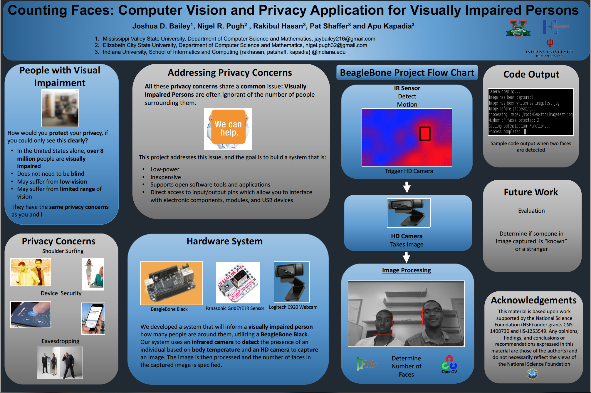
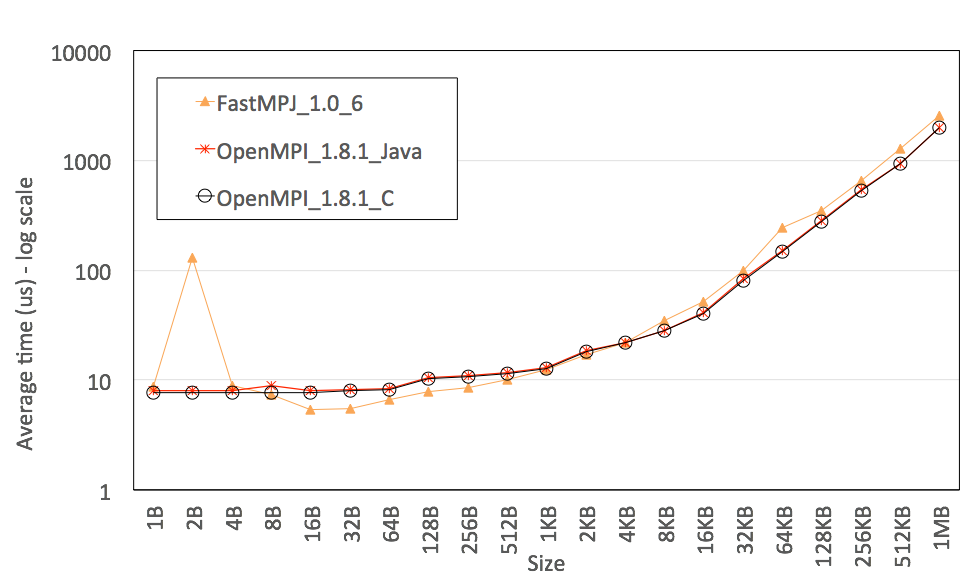

INTERNSHIP / RESEARCH EXPERIENCE



Hello! Thank you for visiting my webpage! I am a Senior Computer Science and Mathematics Major at Elizabeth City State University. Please feel free to purouse my webpage and view my experience and accomplishments! In the future I would like to utilize the skills of my bachelor's degree to pursue a masters degree in one of the fields! If you have any questions, feel free to contact me!
Elizabeth City State University
GPA : 3.86
Fall 2013 - Spring 2017
Elizabeth City State University
GPA : 3.86
Fall 2013 - Spring 2017
Elizabeth City State University
Elizabeth City State University
Elizabeth City State Unversity
C++
Java
Python
HTML/CSS
Dreamweaver
Photoshop


nigel.pugh32@gmail.com
1704 Weeksville Road
Campus Box #457
Elizabeth City, NC 27909
U.S.A.
252.862.6170
Created by BLACKTIE.CO